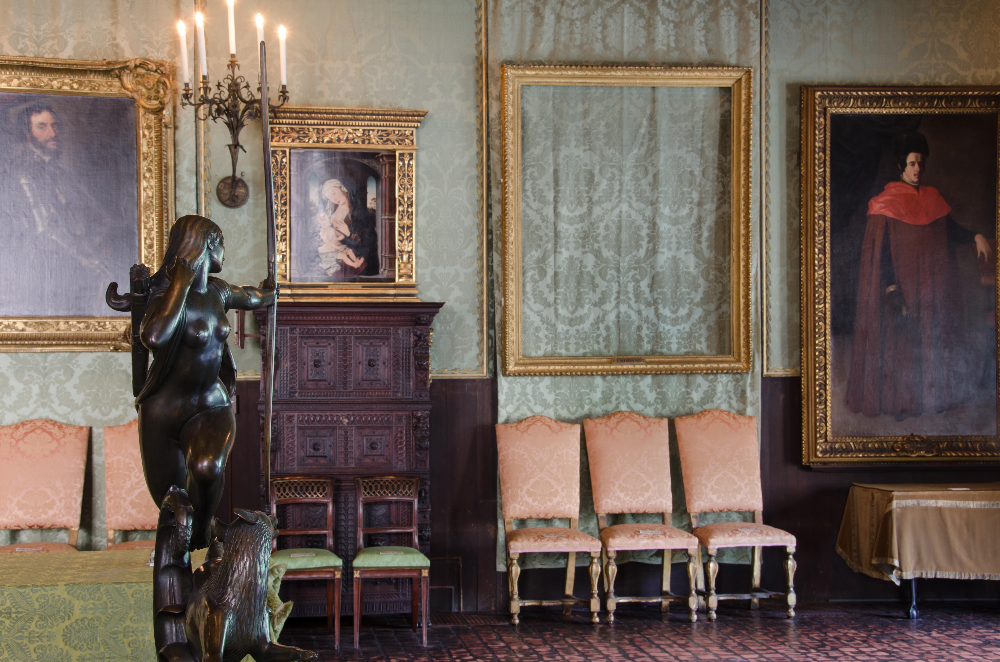
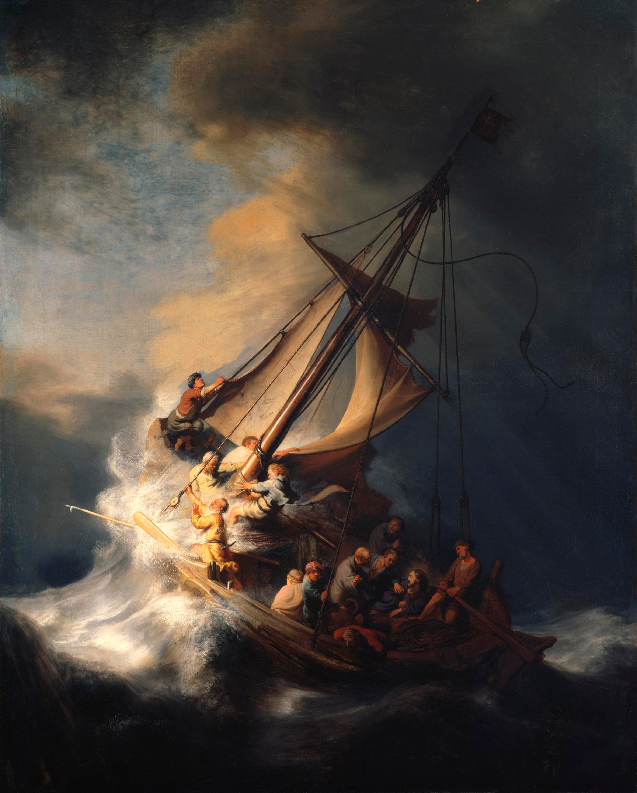
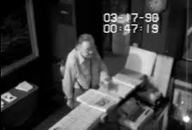

The Gardner Heist
Boston, Massachusetts — March 1990

The Event
On the morning of March 18, 1990, two men disguised as police officers entered the Isabella Stewart Gardner Museum. In 81 minutes, they cut 13 masterpieces from their frames, including works by Vermeer and Rembrandt. To date, not a single piece of the $500 million haul has been recovered.


Current Theories
The Archive presents these theories as the primary leads in a 30-year cold case.
- Organized Crime Syndicate The FBI has pursued leads linking the theft to the Mid-Atlantic and New England mafia, suggesting the art was moved through underworld channels.
- The Inside Accomplice Questions remain regarding the behavior of the security guards that night and why specific, high-value targets were bypassed in favor of others.